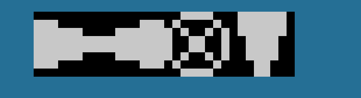

Configuración de enemigos
Toda la información sobre la personalización del comportamiento de enemigos
Configuración general en atributos del mapa (tiled)
Configuraciones generales
-
jumpOnEnemies permite hacer que tu personaje salte sobre los enemigos sin aplicar daño. Si activas killJumpingOnTop se anula esta.
-
enemiesNormalCollide habilita la colisión de enemigos con el escenario en modo normal (los que se mueven en diagonal)
-
enemiesRespawnInScreen activa el mecanismo por el cuál los enemigos resurgen después de matarlos. El enemigo se mostrará parpadeando breves momentos antes de aparecer.
Distancia de enemigos en modo Alerta
- enemiesAlertDistance permite indicar la distancia a la que etarán alerta los enemigos en este modo. Los valores son near, medium y far
Enemigos que disparan
Con estas opciones podrás configurar qué enemigos te dispararán al tenerte en su linea de tiro.
NOTA: Sólo puede haber un disparo enemigo a la vez por lo que el primero que te vea te disparará.
Para habilitar este modo indicaremos en el atributo enemiesShoot un número del 1 al 8 que marcarán dentro de los sprites de enemigos quienes dispararán, siendo agrupadores entre ellos.
Esto quiere decir que si marco 3, todos los enemigos iguales o menores al grupo 3 te dispararán. Hay que tenerlo en cuenta al poner los sprites de enemigos que disparan primero
enemiesBulletCollision permite indicar si las balas enemigas chocarán o no contra tiles no traspasables.
enemiesShootDirection indica la dirección a la que dispararán los enemigos. Hay que tener en cuenta que, de momento, no distinguen si te están viendo o no, por lo que te dispararán por delante y por detrás así como arriba y abajo.
enemiesShootSpeed cambia la velocidad de la bala de los enemigos entre slow (lenta) y fast (rápida)
enemiesShootingLookAtPlayer activa la característica por la cual los enemigos te miran al dispararte aunque no te estén mirando
enemiesShootOnlyLookingPlayer obliga a los enemigos a estar mirando al player para disparar
bulletsCollisionWithBullets hará que las balas de los enemigos colisione con las tuyas
Las opciones son horizontal, vertical o all (las 2 anteriores)
Para configurar el sprite de bala tenemos el fichero bullet.zxp, bullet_animated.zxp y bullet_overhead.zxp

Comportamiento de enemigos perseguidores
- enemiesPursuitCollide permite indicar si los enemigos que te persiguen atraviesan o no tiles no traspasables
Limitación
Puedes añadir hasta 3 enemigos en cada pantalla y configurar su movimiento.
Configuración individual de cada enemigo
Posición inicial
Para ello deberás seleccionar la capa objects y arrastrar el 1er sprite del enemigo a posicionar donde quieras que aparezca inicialmente.
Como truco, si pulsas la tecla Ctrl el enemigo se situará respetado la rejilla.
En la propiedad type de este objeto deberás introducir el text enemy
Es recomendable que le pongas un nombre al mismo para cuando referencies la posición final a este. E.g. enemy_1
Posición final
- Haz clic en el botón Insert point.
- Pon este punto donde quieras que pare el enemigo manteniendo la tecla Ctrl.
- Añade a este punto una propiedad personalizada (custom property) de tipo objeto y selecciona el enemigo relacionado con este punto.

Tipos de movimiento
El enemigo permite múltiples tipos de movimiento:
- Horizontal, el enemigo y su trayecto están a la misma altura.

- Vertical, el enemigo y su trayecto están en la misma vertical.
- Diagonal, el enemigo y el punto final no están a la misma altura ni en la misma vertical.
- Parado, el enemigo está quieto sin moverse.
Modo de comportamiento
Una vez elegido el movimiento se puede elegir el comportamiento. Esto se hace añadiedo al enemigo la propiedad mode del tipo enemyMovement


-
Normal, no altera el tipo de movimiento (por defecto)
-
Alerta, el enemigo está haciendo su movimiento configurado hasta que te acercas lo suficiente cuando el enemigo perseguirá al protagonista. Volverá a su estado inicial cuando entres de nuevo a la pantalla. Los enemigos no te perseguirán si estás invencible.
-
Persecución (ignorará el tipo de movimiento), el enemigo perseguirá al protagonista. Los enemigos no te perseguirán si estás invencible.
-
Una dirección (requiere un tipo de movimiento horizontal o vertical). el enemigo solo se moverá en una dirección y cuando llegue al final saldrá del mismo punto inicial. Hay que tener en cuenta en los sprites si la dirección es abajo o arriba. Para izquierda o derecha usará los habituales.
-
Clockwise (sentido agujas de reloj), el enemigo se moverá en el sentido de las agujas de un reloj formando un cuadrado, para ello requiere un tipo de movimiento diagonal para que se aprecie.
-
Anticlockwise (sentido contrario agujas de reloj), el enemigo se moverá en el sentido contrario de las agujas de un reloj formando un cuadrado, para ello requiere un tipo de movimiento diagonal para que se aprecie.
NOTA: todos aquellos modos de comportamiento que se usen en enemigos usarán espacio del motor y lo liberarán si ningún enemigo los usa
Cantidad de vida
Puedes asignarle la cantidad de vida que tiene cada enemigo, por ejemplo si le pones cantidad de vida 5 el protagonista le tendrá que disparar 5 veces para matarlo.
Para ello solo tienes que añadir una propiedad personalizada life de tipo int con el valor de la vida. Si no la defines, por defecto, el enemigo tiene una unidad de vida.

Enemigos invencibles
Para añadir enemigos invencibles solo tendras que ponerle en el atributo life el valor 99.
Velocidad
Puedes establecer la velocidad del enemigo, para ello solo tienes que añadir en el mismo una propiedad personalizada speed de tipo enemySpeed y seleccionar entre 1, 2 o 3 de más lento a más rápido. Si no añades la propiedad se establecerá a 3 como venía funcionando hasta ahora.
- El enemigo se moverá cada 4 frames.
- El enemigo se moverá cada 2 frames.
- El enemigo se moverá cada 1 frame (Opción por defecto).